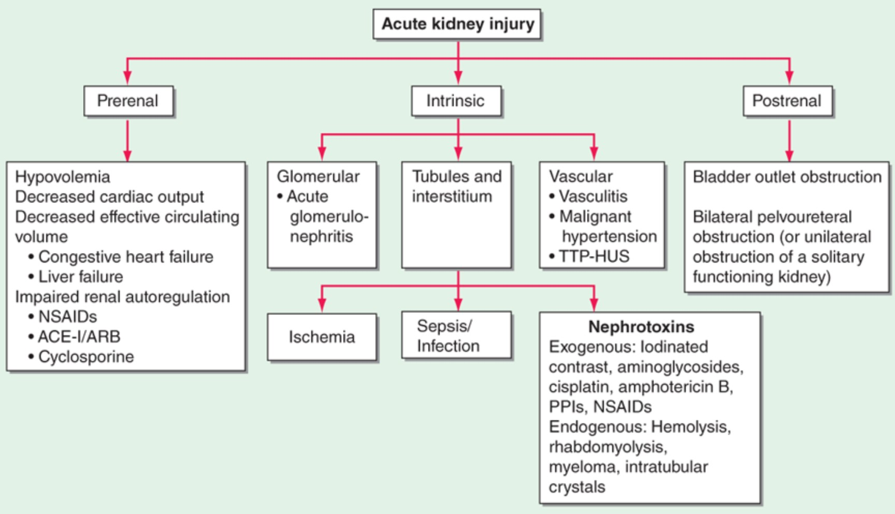
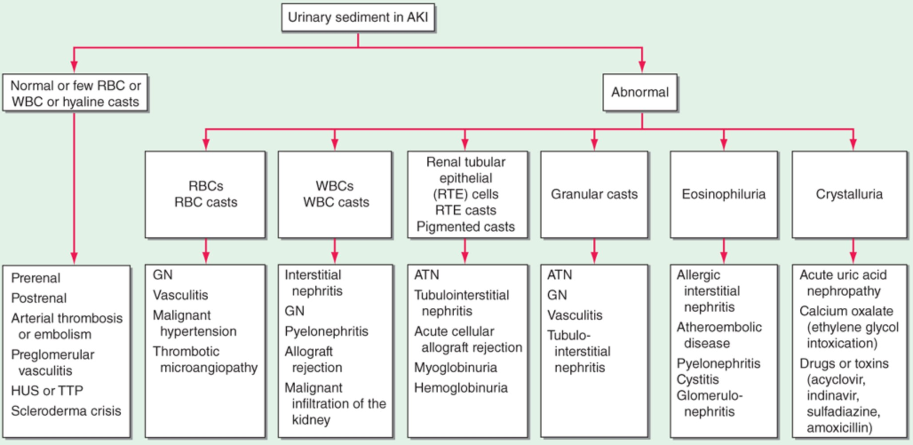

Acute kidney injury
AKI is not a single disease but, rather, a designation for a heterogeneous group of conditions that share common diagnostic features: specifically, an increase in serum creatinine (SCr) concentration often associated with a reduction in urine volume.
AKI is a clinical diagnosis and not a structural one.
A patient may have AKI with or without injury to the kidney parenchyma.
AKI can range in severity from asymptomatic and transient changes in laboratory parameters of glomerular filtration rate (GFR), to overwhelming and rapidly fatal derangements in effective circulating volume regulation and electrolyte and acid-base composition of the plasma.
EPIDEMIOLOGY

Common causes of community-acquired AKI include volume depletion, heart failure, adverse effects of medications, obstruction of the urinary tract, or malignancy.
The most common clinical settings for hospital-acquired AKI are sepsis, major surgical procedures, critical illness involving heart or liver failure, and nephrotoxic medication administration.
DIAGNOSTIC EVALUATION
AKIis currently defined by a rise from baseline of at least 0.3 mg/dL within 48 h or at least 50% higher than baseline within 1 week, or a reduction in urine output to '<'0.5 mL/kg per h for longer than 6 h.
The distinction between AKI and CKD is important for proper diagnosis and treatment.
The distinction is straightforward when a recent baseline SCr concentration is available, but more difficult in the many instances in which the baseline is unknown.
In such cases, clues suggestive of CKD can come from radiologic studies (e.g., small, shrunken kidneys with cortical thinning on renal ultrasound, or evidence of renal osteodystrophy) or laboratory tests such as normocytic anemia in the absence of blood loss or secondary hyperparathyroidism with hyperphosphatemia and hypocalcemia, consistent with CKD
Once the diagnosis of AKI is established, its cause needs to be determined since the elevation of SCr or reduction in urine output can be due to a large number of physiological and pathophysiological processes.
**Normal kidney size in adult: approximately 11 ± 1.0 cm long (7–12)**
History and physical examination
With AKI, SCr will lag behind changes in filtration rate.
1. Pre renal : in the setting of vomiting, diarrhea, glycosuria causing polyuria, and several medications including diuretics, NSAIDs, ACE inhibitors, and ARBs. Physical signs of orthostatic hypotension, tachycardia, reduced jugular venous pressure, decreased skin turgor, and dry mucous membranes are often present in prerenal azotemia.
2. Post renal : history of prostatic disease, nephrolithiasis, or pelvic or paraaortic malignancy and Nocturia and urinary frequency or hesitancy can be seen in prostatic disease.
3. Intra renal : A careful review of all medications is imperative in the evaluation of an individual with AKI.
Idiosyncratic reactions to a wide variety of medications can lead to allergic interstitial nephritis, which may be accompanied by fever, arthralgias, and a pruritic erythematous rash.
AKI accompanied by palpable purpura, pulmonary hemorrhage, or sinusitis raises the possibility of systemic vasculitis with glomerulonephritis.
Urinalysis

Blood laboratory findings
With many of the epithelial cell toxins such as aminoglycoside antibiotics and cisplatin, the rise in SCr is characteristically delayed for 3–5 days to 2 weeks after initial exposure.
Severe anemia in the absence of bleeding may reflect hemolysis, multiple myeloma, or thrombotic microangiopathy (e.g., hemolytic uremic syndrome [HUS] or TTP).
Other laboratory findings of thrombotic microangiopathy include thrombocytopenia, schistocytes on peripheral blood smear, elevated lactate dehydrogenase level, and low haptoglobin content.
Evaluation of patients suspected of having TTP or HUS includes measurement of levels of the von Willebrand factor cleaving protease (ADAMTS13) and testing for Shiga toxin–producing Escherichia coli.
Serum creatine kinase and uric acid levels are often elevated in rhabdomyolysis, while tumor lysis syndrome shows normal or marginally elevated creatine kinase and markedly elevated serum uric acid.
The co-occurrence of an increased anion gap and an osmolal gap may suggest ethylene glycol poisoning.
Low anion gap may provide a clue to the diagnosis of multiple myeloma due to the presence of unmeasured cationic proteins.
Laboratory blood tests helpful for the diagnosis of glomerulonephritis and vasculitis include depressed complement levels and high titers of antinuclear antibodies (ANAs), antineutrophil cytoplasmic antibodies (ANCAs), antiglomerular basement membrane (Anti-GBM) antibodies, and cryoglobulins.
Renal failure indices
The response of urine output to crystalloid or colloid fluid administration may be both diagnostic and therapeutic in prerenal azotemia.
*Prerenal azotemia may cause a disproportionate elevation of the BUN compared to creatinine.
*With prerenal azotemia, the FeNa may be <'1%, suggesting avid tubular sodium reabsorption.
In ischemic AKI, the FeNa is frequently >1% because of tubular injury and resultant inability to reabsorb sodium.
Loss of concentrating ability is common in most forms of AKI that affect the tubules and interstitium, resulting in urine osmolality <'350 mOsm/kg, but the finding is not specific.
*Radiologic evaluation
Postrenal AKI should always be considered in the differential diagnosis of AKI because treatment is usually successful if instituted early.
Kidney biopsy
If the cause of AKI is not apparent, kidney biopsy should be considered.
The procedure is most often used when other possible diagnoses are being considered such as glomerulonephritis, vasculitis, interstitial nephritis, myeloma kidney, HUS and TTP, and allograft dysfunction.
Novel biomarker
In cases of oliguric AKI, the urinary flow rate in response to bolus intravenous furosemide 1.0–1.5 mg/kg can be used a prognostic test: urine output of less than 200 mL over 2 h after intravenous furosemide may identify patients at higher risk of progression to more severe AKI, and the need for renal replacement therapy.
Kidney injury molecule-1 (KIM-1) is a type 1 transmembrane protein that is abundantly expressed in proximal tubular cells injured by ischemia or nephrotoxins such as cisplatin.
Neutrophil gelatinase associated lipocalin (NGAL, also known as lipocalin-2 or siderocalin) is another novel biomarker of AKI.
IGFBP7, TIMP-2 and so on.
COMPLICATIONS OF AKI
PREVENTION AND TREATMENT OF AKI
Optimization of hemodynamics, correction of fluid and electrolyte imbalances, discontinuation of nephrotoxic medications, and dose adjustment of administered medications are all critical.
Prerenal Azotemia
The composition of replacement fluids should be targeted to the type of fluid lost.
Isotonic crystalloid and/or colloid should be used for less severe acute hemorrhage or plasma loss in the case of burns and pancreatitis. Crystalloid solutions are less expensive and probably equally efficacious as colloid solutions.
Albumin may prevent AKI in those treated with antibiotics for spontaneous bacterial peritonitis.
*There is no evidence that increasing urine output itself improves the natural history of AKI, but diuretics may help to avoid the need for dialysis in some cases.
In decompensated heart failure, stepped diuretic therapy was found to be superior to ultrafiltration in preserving renal function.
Intrinsic AKI
AKI due to acute glomerulonephritis or vasculitis may respond to immunosuppressive agents and/or plasmapheresis
AKI due to scleroderma (scleroderma renal crisis) should be treated with ACE inhibitors.
Early and aggressive volume repletion is mandatory in patients with rhabdomyolysis, who may initially require 10 L of fluid per day.
Alkaline fluids (e.g., 75 mmol/L sodium bicarbonate added to 0.45% saline) may be beneficial in preventing tubular injury and cast formation, but carry the risk of worsening hypocalcemia.
Postrenal AKI
The site of obstruction defines the treatment approach.
Electrolyte and Acid-Base Abnormalities
Metabolic acidosis is generally not treated unless severe (pH <'7.20 and serum bicarbonate <'15 mmol/L).
Hypocalcemia does not usually require therapy unless symptoms are present. Ionized calcium should be monitored rather than total calcium when hypoalbuminemia is present.
Gastrointestinal prophylaxis with proton pump inhibitors or histamine (H2) receptor blockers is required. It is important to recognize, however, that protein pump inhibitors have been associated with AKI from interstitial nephritis, a relationship that is increasingly being recognized.
Dialysis Indications and Modalities
Dialysis is indicated when medical management fails to control volume overload, hyperkalemia, or acidosis; in some toxic ingestions; and when there are severe complications of uremia (asterixis, pericardial rub or effusion, encephalopathy, uremic bleeding).
The initiation of dialysis should not await the development of a life-threatening complication of renal failure.
Many nephrologists initiate dialysis for AKI empirically when the BUN exceeds a certain value (e.g., 100 mg/dL) in patients without clinical signs of recovery of kidney function.
Vascular access is through the femoral, internal jugular, or subclavian veins. Hemodialysis is an intermittent procedure that removes solutes through diffusive and convective clearance. Hemodialysis is typically performed 3–4 h per day, three to four times per week, and is the most common form of renal replacement therapy for AKI.
One of the major complications of hemodialysis is hypotension, particularly in the critically ill, which can perpetuate AKI by causing ischemic injury to the recovering organ.
Continuous intravascular procedures were developed in the early 1980s to treat hemodynamically unstable patients without inducing the rapid shifts of volume, osmolarity, and electrolytes characteristic of intermittent hemodialysis.
Studies have failed to show that continuous therapies are superior to intermittent therapies.
If available, CRRT is often preferred in patients with severe hemodynamic instability, cerebral edema, or significant volume overload.
Peritoneal dialysis can be performed through a temporary intraperitoneal catheter, although it is rarely used in the United States for AKI in adults.
Peritoneal dialysis may not be sufficient for hypercatabolic patients due to inherent limitations in dialysis efficacy.
OUTCOME AND PROGNOSIS
Prerenal azotemia, with the exception of the cardiorenal and hepatorenal syndromes, and postrenal azotemia carry a better prognosis than most cases of intrinsic AKI.
he kidneys may recover even after severe, dialysis-requiring AKI. Survivors of an episode of AKI requiring temporary dialysis, however, are at extremely high risk for progressive CKD, and up to 10% may develop end-stage renal disease. Postdischarge care under the supervision of a nephrologist for aggressive secondary prevention of kidney disease is prudent.